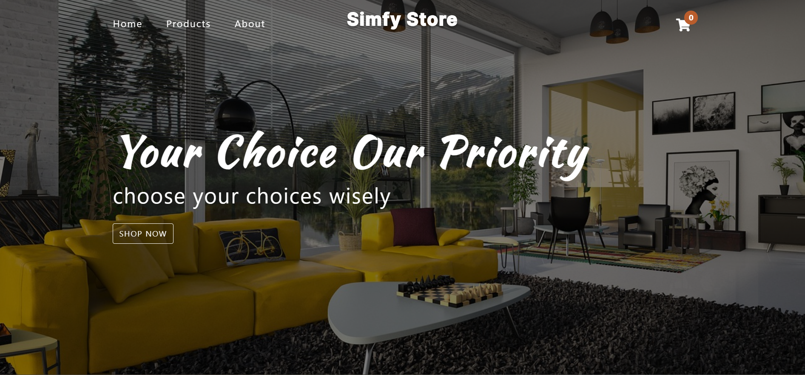

Vanilla Js
This e-commerce website, built with vanilla JS, showcases items and includes cart functionality, offering an interactive shopping experience with detailed product displays and efficient cart management for users.